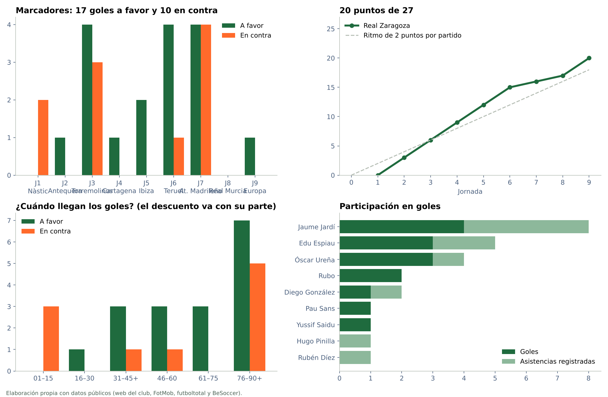
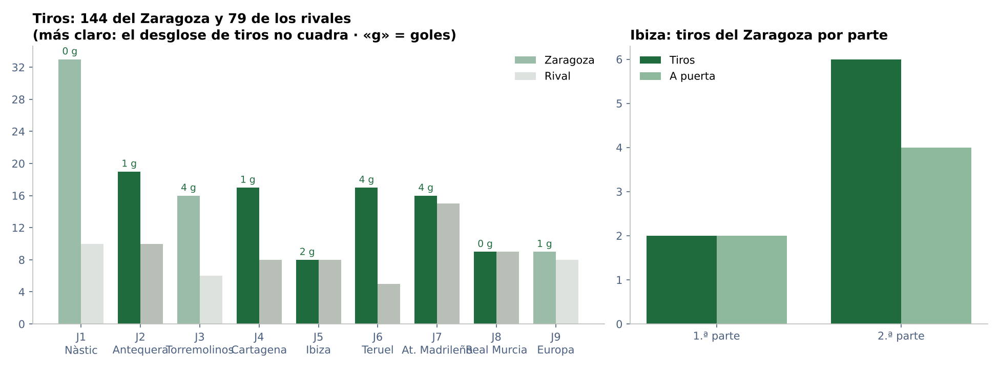
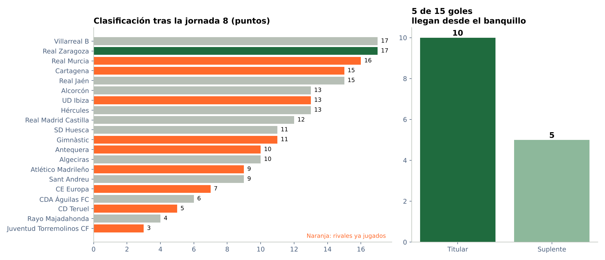
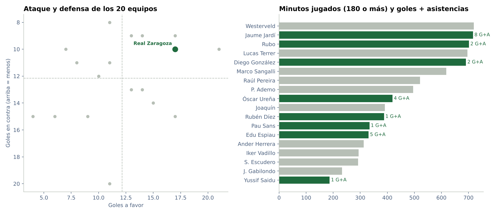

Proyectos / Real Zaragoza 2026/27 / Informe completo

Informe completo · Primera Federación, grupo 2
Real Zaragoza 2026/27 tras la jornada 8
Datos de los 8 partidos de liga jugados hasta el 18 de octubre de 2026. Todo sale de fuentes públicas, contrastadas entre sí.
Conclusiones
Qué dicen los datos
17 puntos en ocho jornadas. El 0-0 en Murcia deja al Real Zaragoza segundo, empatado a puntos con el Villarreal B. Ha ganado cinco partidos, empatado dos y perdido uno: 2,12 puntos por partido.
Del 4-4 al 0-0. Tras los ocho goles del encuentro en Alcalá, Murcia termina sin goles. Es el primer partido de liga de esta temporada en el que ninguno de los dos equipos marca. El balance acumulado queda en 16 goles a favor y 10 en contra.
Cuatro porterías a cero. No ha recibido goles ante Antequera, Cartagena, Ibiza y Real Murcia.
En casa y fuera. En casa suma nueve puntos de nueve, con seis goles a favor y uno en contra. Fuera lleva ocho puntos en cinco encuentros, con un balance de 10-9.
Los tiros bajan en Murcia. Nueve por equipo, con tres a puerta del Zaragoza y uno del rival. En los ocho encuentros acumula 135 tiros frente a 71; el volumen no permite valorar por sí solo la calidad de las ocasiones. La posesión en Murcia es del 49 % en BeSoccer; el club publica un 50 %.
El siguiente rival es el CE Europa. Es 16.º con siete puntos y un balance de seis goles a favor y catorce en contra. La muestra sigue siendo pequeña y no convierte la previa en un pronóstico.
xG de Murcia incorporado. Las capturas de Sofascore facilitadas por el usuario confirman 0,47 xG del Zaragoza y 0,79 del Murcia. Quedan pendientes las estadísticas avanzadas de los otros ocho partidos del grupo en la jornada 8; la comparación agregada mantiene un corte común en la jornada 7.
Gráficos
Resultados y goles
Cómo leo el resumen

Empiezo por los marcadores y la línea de puntos para situar los resultados. Después miro cuándo llegan los goles y quién aparece en ellos. Son cuatro perspectivas de la misma temporada: las uso juntas para hacerme preguntas, sin convertir siete partidos en una conclusión definitiva.
Tiros
Qué me cuentan los remates

Comparo los tiros de ambos equipos en cada jornada. Es una medida de volumen: un disparo lejano y un remate a un metro de la portería cuentan igual aquí. Las barras más claras avisan de discrepancias entre fuentes en J1 y J3.
Clasificación y banquillo
La clasificación y el papel del banquillo

La clasificación sitúa los puntos del Zaragoza frente al resto. La otra gráfica separa los goles de titulares y de jugadores que entraron después. Esto me ayuda a ver de dónde vienen los goles, pero no mide por sí solo si los cambios mejoraron el juego.
El grupo y la plantilla
El equipo en su liga y sus jugadores

A la izquierda comparo goles a favor y en contra de los equipos. A la derecha veo quién acumula minutos en el Zaragoza; solo aparecen quienes llegan a 180. Una barra larga habla de continuidad, no de la calidad de su rendimiento.
Tablas
Goles a favor
| J | Rival | Min. | Goleador | Asistencia | Rol | Penalti | P. p. |
|---|---|---|---|---|---|---|---|
| 2 | Antequera CF | 90+1 | Edu Espiau | — | Suplente | — | — |
| 3 | Juventud Torremolinos CF | 35 | Javi Cuenca | — | — | — | Sí |
| 3 | Juventud Torremolinos CF | 38 | Diego González | Jaume Jardí | Titular | — | — |
| 3 | Juventud Torremolinos CF | 65 | Jaume Jardí | — | Titular | — | — |
| 3 | Juventud Torremolinos CF | 81 | Yussif Saidu | Jaume Jardí | Suplente | — | — |
| 4 | FC Cartagena | 51 | Jaume Jardí | Óscar Ureña | Titular | — | — |
| 5 | UD Ibiza | 59 | Óscar Ureña | Edu Espiau | Suplente | — | — |
| 5 | UD Ibiza | 62 | Óscar Ureña | — | Suplente | — | — |
| 6 | CD Teruel | 45+7 | Óscar Ureña | — | Titular | — | — |
| 6 | CD Teruel | 47 | Edu Espiau | Diego González | Titular | — | — |
| 6 | CD Teruel | 77 | Pau Sans | Jaume Jardí | Suplente | — | — |
| 6 | CD Teruel | 85 | Jaume Jardí | Hugo Pinilla | Titular | — | — |
| 7 | Atlético Madrileño | 24 | Edu Espiau | Rubén Díez | Titular | — | — |
| 7 | Atlético Madrileño | 68 | Rubo | Edu Espiau | Titular | — | — |
| 7 | Atlético Madrileño | 90+9 | Rubo | Jaume Jardí | Titular | — | — |
| 7 | Atlético Madrileño | 90+12 | Jaume Jardí | — | Titular | Sí | — |
«Suplente» quiere decir que el goleador había entrado desde el banquillo. Las asistencias son las que recoge futboltotal, que no las apunta todas.
Minutos de la plantilla
| Jugador | PJ | Titular | Minutos | Goles | Asist. | G+A por 90 |
|---|---|---|---|---|---|---|
| Jaume Jardí | 8 | 7 | 639 | 4 | 4 | 1,13 |
| Westerveld | 7 | 7 | 630 | 0 | 0 | 0 |
| Rubo | 7 | 7 | 612 | 2 | 0 | 0,29 |
| Lucas Terrer | 8 | 7 | 606 | 0 | 0 | 0 |
| Diego González | 7 | 7 | 601 | 1 | 1 | 0,30 |
| Marco Sangalli | 7 | 5 | 528 | 0 | 0 | 0 |
| P. Ademo | 7 | 6 | 496 | 0 | 0 | 0 |
| Raúl Pereira | 7 | 4 | 443 | 0 | 0 | 0 |
| Joaquín | 6 | 3 | 366 | 0 | 0 | 0 |
| Óscar Ureña | 7 | 4 | 363 | 3 | 1 | 0,99 |
| Rubén Díez | 6 | 5 | 354 | 0 | 1 | 0,25 |
| Pau Sans | 7 | 3 | 300 | 1 | 0 | 0,30 |
| Iker Vadillo | 5 | 4 | 294 | 0 | 0 | 0 |
| S. Escudero | 6 | 5 | 292 | 0 | 0 | 0 |
| Ander Herrera | 4 | 3 | 248 | 0 | 0 | 0 |
| Edu Espiau | 5 | 3 | 241 | 3 | 2 | 1,87 |
| J. Gabilondo | 4 | 3 | 233 | 0 | 0 | 0 |
Jugadores con 180 minutos o más. Los minutos no cuentan el descuento: un titular que juega todo el partido suma 90.
Casa y fuera
| Sede | PJ | Puntos | GF | GC | Porterías a cero | Puntos por partido |
|---|---|---|---|---|---|---|
| Casa | 3 | 9 | 6 | 1 | 2 | 3 |
| Fuera | 5 | 8 | 10 | 9 | 2 | 1,60 |
Clasificación tras la jornada 8
| # | Equipo | PJ | G | E | P | GF | GC | DG | Pts |
|---|---|---|---|---|---|---|---|---|---|
| 1 | Villarreal B | 8 | 5 | 2 | 1 | 17 | 9 | 8 | 17 |
| 2 | Real Zaragoza | 8 | 5 | 2 | 1 | 16 | 10 | 6 | 17 |
| 3 | Real Murcia | 8 | 5 | 1 | 2 | 11 | 7 | 4 | 16 |
| 4 | Cartagena | 8 | 4 | 3 | 1 | 13 | 5 | 8 | 15 |
| 5 | Real Jaén | 8 | 4 | 3 | 1 | 12 | 8 | 4 | 15 |
| 6 | Alcorcón | 8 | 3 | 4 | 1 | 14 | 6 | 8 | 13 |
| 7 | UD Ibiza | 8 | 4 | 1 | 3 | 11 | 10 | 1 | 13 |
| 8 | Hércules | 8 | 4 | 1 | 3 | 6 | 7 | -1 | 13 |
| 9 | Real Madrid Castilla | 8 | 3 | 3 | 2 | 11 | 9 | 2 | 12 |
| 10 | SD Huesca | 8 | 2 | 5 | 1 | 10 | 10 | 0 | 11 |
| 11 | Gimnàstic | 8 | 3 | 2 | 3 | 11 | 12 | -1 | 11 |
| 12 | Antequera | 8 | 2 | 4 | 2 | 13 | 12 | 1 | 10 |
| 13 | Algeciras | 8 | 3 | 1 | 4 | 11 | 13 | -2 | 10 |
| 14 | Atlético Madrileño | 8 | 2 | 3 | 3 | 16 | 14 | 2 | 9 |
| 15 | Sant Andreu | 8 | 2 | 3 | 3 | 9 | 10 | -1 | 9 |
| 16 | CE Europa | 8 | 2 | 1 | 5 | 6 | 14 | -8 | 7 |
| 17 | CDA Águilas FC | 8 | 1 | 3 | 4 | 8 | 14 | -6 | 6 |
| 18 | CD Teruel | 8 | 1 | 2 | 5 | 3 | 14 | -11 | 5 |
| 19 | Rayo Majadahonda | 8 | 1 | 1 | 6 | 5 | 9 | -4 | 4 |
| 20 | Juventud Torremolinos CF | 8 | 0 | 3 | 5 | 10 | 20 | -10 | 3 |
Calidad de los datos
Incidencias y decisiones
Cuando dos fuentes no coinciden, lo apunto aquí junto con el dato que me quedo. Un dato que no encuentro queda vacío: nunca lo convierto en un cero.
| Partido | Dato | Problema | Qué hago |
|---|---|---|---|
| General | Cobertura | No hay datos públicos fiables de coordenadas, tracking, distancias, velocidades ni PPDA | No se estiman ni se rellenan |
| General | Nombres | Cada fuente escribe los nombres a su manera: iniciales, apodos («Jamelli» es Rubén Díez y «J. Delgado» es Joaquín) | Uso siempre el nombre de la web del club |
| General | Asistencias | Solo futboltotal las recoge y faltan en las jornadas 1 y 2 y en algún gol suelto | Las trato como un mínimo, no como el total real |
| General | Agregados FootyStats | Sus tablas y su texto no coinciden en tiros ni en xG | No los uso |
| J1 | Minuto gol Carlos Segura | 87 en FotMob; 86 en futboltotal y FootyStats | Dejo el 87; no cambia el tramo |
| J1 | Tiros | El club da 33 tiros, pero 9 a puerta y 16 fuera suman 25 y no publica los bloqueados | Uso el total con aviso y no calculo la precisión de tiro de ese partido |
| J1 | Minutos de los cambios | Club 55/71/82; futboltotal 56/72/82-83 | Uso los minutos del club |
| J2 | Fecha | La URL de futboltotal dice 06/09 y la ficha dice 5/09 a las 21:00 | Dejo el 5/09 (FotMob y la propia ficha) |
| J2 | Pases | BeSoccer 510/256 y 452/181 completados; web del club 510/257 y 453/183 | Cada cálculo sale de una sola fuente |
| J2 | Paradas | Una parada con dos tiros a puerta del rival y ningún gol encajado | No uso las paradas |
| J2 | Penalti fallado | El Antequera falla un penalti en el 71 (futboltotal) | Lo anoto como contexto |
| J3 | Alineación | La web del club no publica la ficha. Sport Aragón publica el once; sus cinco cambios coinciden con futboltotal y LaLiga. «Rubén Iranzo» es Rubo | La doy por buena con fuentes coherentes |
| J3 | Minuto gol en propia puerta | 35 en FotMob y en el club; 36 en FootyStats | Dejo el 35 |
| J3 | Tiros | El club da 16 tiros, pero 7 a puerta y 3 fuera no llegan al total | No deduzco los bloqueados |
| J4 | Estadísticas avanzadas | AupaZaragoza pone 1-0 al descanso con el gol en el 51, y no dice qué modelo de xG usa | Las guardo aparte y no saco conclusiones del xG |
| J4 | Expulsión rival | 49 en AupaZaragoza; 50 en FotMob | No relaciono la expulsión con el gol del 51 |
| J5 | Fecha | La URL de futboltotal dice 27/09 y la ficha dice 25/09 | Dejo el 25/09 (FotMob y la propia ficha) |
| J5 | Minuto primer gol | 58 en futboltotal; 58 o 59 en BeSoccer; 59 en FotMob | Dejo el 59 |
| J5 | Alineación | La web del club no publica la ficha; uso BeSoccer, que cuadra con los cambios de futboltotal | La doy por buena con dos fuentes coherentes |
| J6 | Minuto gol Ureña | La ficha del club pone 52; FotMob, futboltotal y el 1-1 al descanso dicen 45+7 | Dejo el 45+7 |
| J6 | Tiros a puerta | BeSoccer 7 (cuadra: 7 + 9 fuera + 1 bloqueado = 17); club 9 | Uso BeSoccer |
| J6 | Paradas | 1 y 5 no cuadran con los tiros a puerta (7 y 3) ni con el 4-1 | No uso las paradas |
| J6 | Minuto gol Pau Sans | 77 en FotMob; 76 en la crónica de radio | Dejo el 77 |
| General | Partidos del Real Murcia | La jornada 5 (Cartagena-Murcia) se jugó el 7/10, después de la 6. Resultados iguales en futbolme y BeSoccer | Los ordeno por jornada |
| J7 | Alineación | La web del club no ha publicado la ficha. Sport Aragón, BeSoccer, AupaZaragoza y Aragón TV dan el mismo once | La doy por buena con fuentes coherentes |
| J7 | Cambios del 70 y del 82 | futboltotal, AupaZaragoza y la ficha de Sport Aragón: Joaquín por Espiau, Pau Sans por Rubén Díez, Cuenca por Pereira y Saidu por Terrer. BeSoccer los empareja al revés | Uso futboltotal (tres fuentes coinciden); los minutos no cambian |
| J7 | Minuto gol Espiau | 24 en FotMob; BeSoccer; futboltotal y AupaZaragoza; 23 en Sport Aragón | Dejo el 24 |
| J7 | Minuto primer gol de Rubo | 68 en FotMob; futboltotal y AupaZaragoza; 67 en BeSoccer | Dejo el 68 |
| J7 | Asistencias | BeSoccer, futboltotal y AupaZaragoza dan Rubén Díez (24), Espiau (68) y Jardí (90+9). Las crónicas describen el último gol como un cabezazo a balón parado, sin nombrar al lanzador | Las apunto |
| J7 | Penalti fallado | Rubén Díez falla un penalti en el 66 (lo para Astralaga) | Lo anoto como contexto |
| J7 | Pases | BeSoccer 451/382 completados; AupaZaragoza 448/379 | Cada cálculo sale de una sola fuente (BeSoccer) |
| J7 | Tiros por partes | BeSoccer no separa bien los tiros a puerta y fuera por partes; los de AupaZaragoza suman sus totales | Uso AupaZaragoza para esas dos métricas por partes |
| J7 | Posesión por partes | BeSoccer 61 % y 70 %; AupaZaragoza 61 % y 69 % | Uso BeSoccer |
| J7 | Tarjetas | AupaZaragoza y futboltotal cuentan una amarilla al entrenador (Ibai, 90+2); Sport Aragón da dos amarillas a Taufik (Atlético) y las demás fuentes una | Solo apunto las de jugadores del Zaragoza |
| J7 | Clasificación | El Hércules-Sant Andreu de la jornada 7 se juega el 12/10, después de cerrar estos datos. Tabla de BeSoccer; cuadra con la de la jornada 6 y los resultados de la jornada 7 que publica Sport Aragón | Hércules y Sant Andreu figuran con 6 partidos |
| General | Partidos del Real Murcia | La jornada 7 (Rayo Majadahonda 0-1 Real Murcia) aún no aparece en futbolme. BeSoccer y futboltotal dan el 0-1 | Lo apunto con BeSoccer |
| J7 | Clasificación | El Hércules 1-0 Sant Andreu (12/10) ya está jugado según Sofascore. La tabla de la jornada 7 tenía a los dos con 6 partidos | Actualizo la tabla tras la jornada 7: el Hércules sube al 4.º con 13 puntos y los empatados a puntos se ordenan por diferencia de goles |
| General | Grupo 2 | Sofascore no da el xG de tres partidos del grupo: Huesca-Sant Andreu (J1), Villarreal B-Algeciras (J2) y Gimnàstic-Sant Andreu (J5) | Las medias de xG de esos equipos se calculan solo con los partidos que lo tienen |
| General | Sofascore | Entre el 15/10 y el 16/10 Sofascore corrigió varias estadísticas secundarias de los partidos del Zaragoza (tiros, pases, duelos, despejes). El xG no cambió | Uso siempre la última versión y vuelvo a descargar todos los partidos a la vez, para que el Zaragoza y el resto del grupo salgan de la misma consulta |
| J8 | Sofascore | La lectura web de statistics del evento 16599931 y events/round/8 no está accesible (19-10-2026) | Métricas de Murcia-Zaragoza y Cartagena-Europa incorporadas el 20-10-2026 mediante capturas de Sofascore facilitadas por el usuario; comparación del grupo con corte común J7 mientras faltan los otros ocho partidos |
| J8 | Marcador | La consulta web de team/2815/events/next/0 no está accesible | Conservo datos/sofascore.json sin cambios por la regla indicada |
| J8 | Posesión | Club 50 %; BeSoccer 49 % para el Zaragoza | Uso BeSoccer; los tiros coinciden: 9-9 y 3-1 a puerta |
| J8 | Estadísticas del club | Muchos ceros aparentes: faltas y tarjetas contradicen los eventos; el desglose de tiros no suma | No uso esos ceros ni los estimo; bloqueo de tiros de BeSoccer |
| J8 | Expulsión | futboltotal indica roja directa; BeSoccer y Sport Aragón indican doble amarilla en el 82 | Registro Segunda amarilla para P. Ademo; primera amarilla 45; Escudero 14; Ander 73; Pau 87 |
| J8 | Cambios | La ficha oficial entremezcla nombres de los equipos en el 69 | Pau Sans sustituye a Edu Espiau: confirmado por los onces y el resto de sustituciones |
| J8 | Vídeo | El acceso directo de YouTube fallaba; el usuario ha facilitado el archivo del resumen oficial (154,6 s) | Análisis visual completado el 19-10-2026; no contiene el córner final al larguero; no se modifica goles_video.csv |
| J8 | Previa CE Europa | Futbolme no accesible y calendario completo de BeSoccer no recuperable | Resultados de Goal contrastados J1-J7 con grupo2_partidos.csv; J8 cuadra con clasificación oficial (6-14 y 7 puntos); pendiente contraste futbolme/BeSoccer solicitado |
| J8 | Grupo 2 PJ | Cada equipo tiene 7 partidos en grupo2_partidos.csv y 8 en la clasificación J8 | Faltan los diez partidos de J8: no se presenta la cobertura como actualizada |
| J8 | Minutos | Primera expulsión del Zaragoza: Ademo en el 82 | Añadido minuto a tarjetas.csv y salida sin cambio en Python y R; no se añade una sustitución ficticia |
Método
Cómo está hecho
Los datos de cada partido los copio a mano de las fichas públicas. Un script de Python los cruza entre sí (goles con marcadores, cambios con alineaciones, tarjetas con estadísticas y clasificación con resultados) y no genera nada si algo no cuadra. Después calcula las tablas, dibuja los gráficos y monta esta página. Un segundo script en R repite los cálculos principales para comprobar que salen igual.
Fuentes
- https://www.fotmob.com/es/matches/real-zaragoza-vs-gimnastic/2byw33
- https://www.fotmob.com/es/matches/real-zaragoza-vs-antequera/6nntpao
- https://www.fotmob.com/es/matches/real-zaragoza-vs-juventud-torremolinos-cf/x6r0vf7
- https://www.fotmob.com/es/matches/real-zaragoza-vs-cartagena/2dikzw
- https://www.fotmob.com/es/matches/real-zaragoza-vs-ud-ibiza/8628l3cc
- https://www.fotmob.com/es/matches/real-zaragoza-vs-cd-teruel/91rtz0x
- https://www.fotmob.com/es/matches/real-zaragoza-vs-atletico-madrileno/6nepdyf
- https://www.realzaragoza.com/partidos/temporada-2026-2027-primera-federacion-8-real-murcia-cf-vs-real-zaragoza-3920
- https://www.realzaragoza.com/partidos/temporada-2026-2027-primera-federacion-1-gimnastic-de-tarragona-vs-real-zaragoza-3775
- https://www.realzaragoza.com/partidos/temporada-2026-2027-primera-federacion-2-real-zaragoza-vs-antequera-cf-3802
- https://www.sportaragon.com/articulo/real-zaragoza/alineaciones-confirmadas-juventud-torremolinos-real-zaragoza/20260913145919159329.html
- https://www.realzaragoza.com/partidos/temporada-2026-2027-primera-federacion-4-real-zaragoza-vs-fc-cartagena-3837
- https://es.besoccer.com/partido/ibiza-eivissa/real-zaragoza/202724147/alineaciones
- https://www.realzaragoza.com/partidos/temporada-2026-2027-primera-federacion-6-real-zaragoza-vs-cd-teruel-3877
- https://www.sportaragon.com/articulo/real-zaragoza/alineaciones-confirmadas-atletico-madrileno-real-zaragoza/20261011200714160911.html
- https://futboltotal.futbol/partido/juventud-torremolinos-vs-zaragoza-primera-division-rfef-group-2-2026-09-13
- https://futboltotal.futbol/partido/atletico-madrid-ii-vs-zaragoza-primera-division-rfef-grupo-2-2026-10-11
- https://futboltotal.futbol/partido/gimnastic-vs-zaragoza-primera-division-rfef-group-2-2026-08-30
- https://futboltotal.futbol/partido/zaragoza-vs-antequera-primera-division-rfef-group-2-2026-09-06
- https://futboltotal.futbol/partido/zaragoza-vs-fc-cartagena-primera-division-rfef-group-2-2026-09-20
- https://futboltotal.futbol/partido/ibiza-vs-zaragoza-primera-division-rfef-group-2-2026-09-27
- https://futboltotal.futbol/partido/zaragoza-vs-teruel-primera-division-rfef-grupo-2-2026-10-04
- https://es.besoccer.com/partido/real-murcia/real-zaragoza/202724302
- https://www.besoccer.com/match/real-zaragoza/antequera/202724015
- https://www.realzaragoza.com/partidos/temporada-2026-2027-primera-federacion-3-juventud-torremolinos-cf-vs-real-zaragoza-3815
- https://es.besoccer.com/partido/ibiza-eivissa/real-zaragoza/202724147
- https://pt.besoccer.com/jogo/real-zaragoza/teruel/202724205
- https://es.besoccer.com/partido/at-madrid-b/real-zaragoza/202724244
- https://aupazaragoza.com/articulo/partido-at-madrile-o-vs-real-zaragoza-2026-10-11
- https://www.fotmob.com/es-419/teams/8394/overview